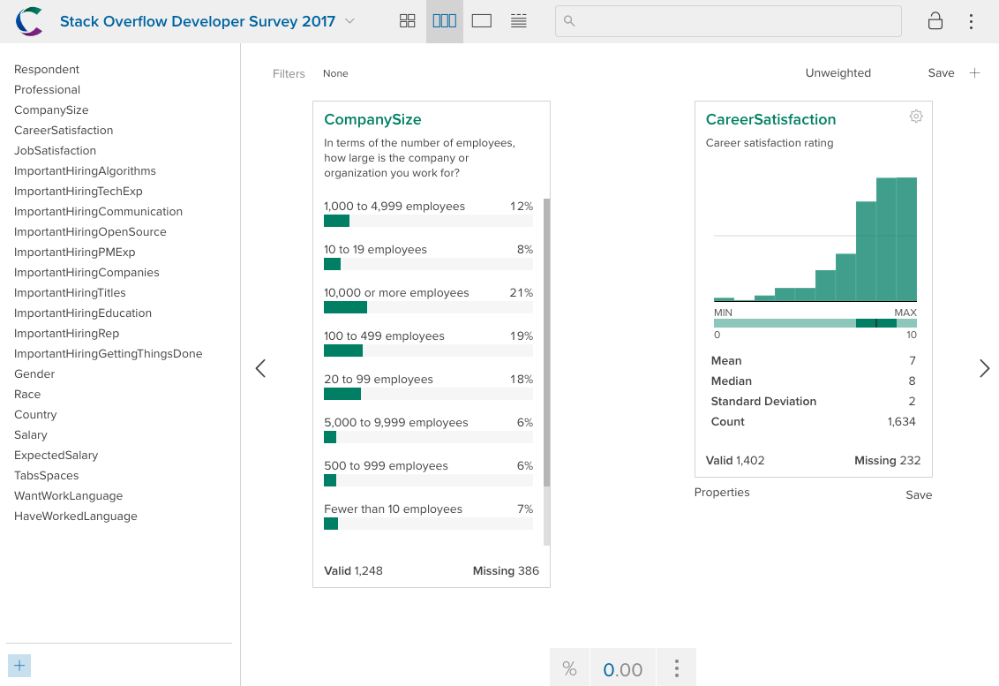
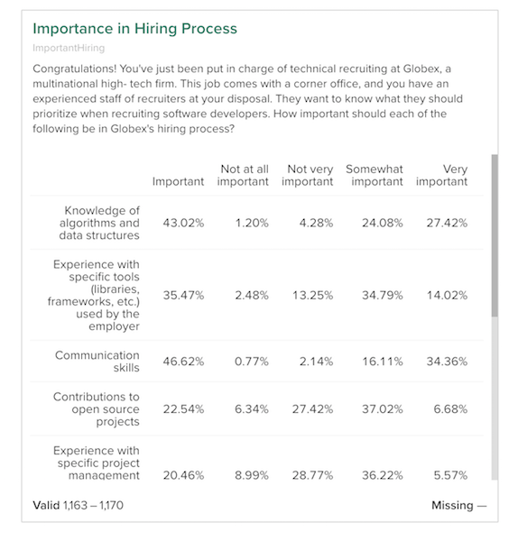
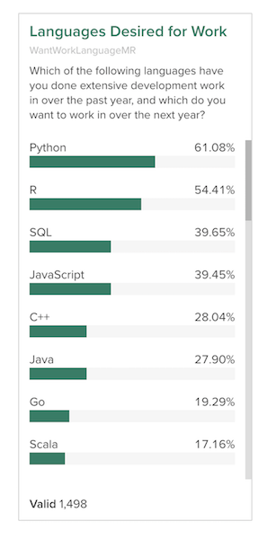

Crunch.io provides a cloud-based data store and analytic engine. It has a web client for interactive data exploration and visualization. The crunch package for R allows analysts to interact with and manipulate Crunch datasets from within R. Importantly, this allows technical researchers to collaborate naturally with team members, managers, and clients who prefer a point-and-click interface. Because every user connects to the same dataset in the cloud, there is no need to email files back and forth continually to share results.
Both crunch and the Crunch web application communicate with the same application programming interface (API), served over secure HTTP. Within an R script or interactive session, the crunch package allows you to interact with your data in Crunch with expressive, idiomatic R. Functions in crunch handle the translation between R objects and API requests and responses, so you can typically interact with your datasets as if they were local data.frames (with some additional metadata), not data on a remote server.
All work with data in Crunch requires authentication with an API key, which you can create from the web application, by following the instructions in the help center.
The crunch R package will use the key automatically if it is stored in environment variable R_CRUNCH_API_KEY. To store your key there, you can run the following code from your R console:
if (!require("usethis")) install.packages("usethis")
# Note: After running this command, R may ask you one or two questions.
# While you likely *do* want to update the dependency packages, you likely
# *do not* want to install any package from source, so you can answer something
# like "update all packages from CRAN" if it asks which packages to update,
# and "No" if it asks you to install from source.
usethis::edit_r_environ()This will open a file where you can put the following (replacing your-secret-key with the key from the web app, and api-url with the API for your company, generally something like "https://your-brand.crunch.io/api/"):
R_CRUNCH_API=api-url
R_CRUNCH_API_KEY=your-secret-keyAfter you save the file R will read these environment variables in during startup. However, because you already have R open, it doesn’t immediately take effect. If you don’t want to restart your R session, you can run the following command from your R console:
readRenviron("~/.Renviron")(The next time you start R, you won’t need to run this command, it is run automatically.)
Now the crunch R package will use your token and connect to the right API.
If you’re having trouble connecting, use crunch_sitrep() to get the situation report on the current status of the crunch package.
## crunch API: https://your-brand.crunch.io/api/
## (found in environment variable `R_CRUNCH_API`)
## key: abcdefghi***************************************
## (found in environment variable `R_CRUNCH_API_KEY`)The Crunch data store is built around datasets, which contain variables. Crunch datasets and variables include more metadata than R data.frames and vectors and if possible the functions and methods in crunch work to keep all of the data on the server, only pulling metadata and aggregations when requested. That way, you can explore datasets much larger than you can comfortably load on your laptop.
To get started, we’re going to import a dataset from R to Crunch. If you already have a dataset—perhaps someone has invited you to collaborate on one already—see listDatasets() or loadDataset() for information on how to find and load it.
There are multiple ways to create a new dataset. In the web application, you can upload files to create datasets using the file loader. From crunch, there are two methods for creating datasets: one for data.frames and one for files of other (non-R) formats.
We’ve included with the package a sample from the 2017 Stack Overflow developer survey which is filtered on those respondents who reported having been R users and selecting a handful of variables.
dim(SO_survey)## [1] 1634 23You can create a dataset from any data.frame you have in your R session with newDataset. Let’s use that sample dataset:
ds <- newDataset(SO_survey, name="Stack Overflow Developer Survey 2017")
dim(ds)## [1] 1634 23newDataset takes a data.frame as it’s input and translates R data types into their analogous types in Crunch.
If you have an SPSS or CSV file, you can upload it with that without first reading it into R by giving newDataset the file name or URL. In this case, it essentially does what you would do in the web application: uploads your file and creates a dataset from it.
Datasets allow you to provide a human-readable name is specified when the dataset is uploaded, and a description.
name(ds)## [1] "Stack Overflow Developer Survey 2017"
description(ds)## [1] ""Both can be set with <- assignment. Let’s give our dataset an informative description:
description(ds) <- "Subset of the main survey, restricted to self-reported R users"
description(ds)## [1] "Subset of the main survey, restricted to self-reported R users"Just as a data.frame has columns you can access with the $ and [ operators, you can get variables from a Crunch dataset the same way.
ds$TabsSpaces## TabsSpaces (categorical)
##
## Count
## Tabs 698
## Spaces 631
## Both 293
ds[, "CompanySize"]## Dataset "Stack Overflow Developer Survey 2017"
## Subset of the main survey, restricted to self-reported R users
##
## Contains 1634 rows of 1 variables:
##
## $CompanySize: CompanySize (categorical)The crunch package aims to bring the minimum amount of data down from the server. Most methods work by calculating values on the server, and then transmitting the results to you R session instead of transmitting all the data. In this case, the server calculates and transmits the variable summary instead of sending the data. If you ever want to actually access the data in the variable, you can call as.vector(var) to pull down its column.
Crunch allows you to store additional metadata about the variables that R doesn’t support. For instance, we can add the survey question wording as the “description” for each variable. This question wording is available in the schema file that comes with the Stack Overflow dataset, in the “Question” column.
descriptions(variables(ds)) <- SO_schema$Question
description(ds$CompanySize)## [1] "In terms of the number of employees, how large is the company or organization you work for?"Since the R package and the web app use the same API to interact with Crunch datasets, you can go back and forth between viewing data in R and on the web. For convenience, the package includes a webApp() function, which opens a dataset or a variable within a dataset in your browser in the web application.
webApp(ds$CompanySize)
Crunch is designed for survey data, and it includes native support for two data structures common in survey data: categorical arrays (or “grids”) and multiple response. In R, these would typically be represented either as multiple, separate columns in a data.frame or as some other data structure that needs processing before you can analyze it. Crunch makes it so you don’t have to think about the underlying data structures in order to do exploratory analysis.
Surveys commonly ask sets of related questions. In the Stack Overflow survey, there are several questions about the importance of various factors for hiring. Conceptually these questions go together, but because of the limitations of storing data in a table they are presented as separate variables.
ds$ImportantHiringCompanies## ImportantHiringCompanies (categorical)
## Congratulations! You've just been put in charge of technical recruiting at Globex, a multinational high- tech firm. This job comes with a corner office, and you have an experienced staff of recruiters at your disposal. They want to know what they should prioritize when recruiting software developers. How important should each of the following be in Globex's hiring process? Previous companies worked at
##
## Count
## Somewhat important 511
## Not very important 316
## Important 230
## Not at all important 63
## Very important 43
ds$ImportantHiringAlgorithms## ImportantHiringAlgorithms (categorical)
## Congratulations! You've just been put in charge of technical recruiting at Globex, a multinational high- tech firm. This job comes with a corner office, and you have an experienced staff of recruiters at your disposal. They want to know what they should prioritize when recruiting software developers. How important should each of the following be in Globex's hiring process? Knowledge of algorithms and data structures
##
## Count
## Important 502
## Very important 320
## Somewhat important 281
## Not very important 50
## Not at all important 14Crunch allows you to bundle these related questions together into a Categorical Array. This is immensely useful when you want to analyze or communicate information about the set of questions. You can use the whole array in a cross-tab without having to process dozens of individual variables.
To create a Categorical Array variable from R, we can use the makeArray function. We’ll pass to that function a selection of variables to bind together into an array, along with any additional metadata we want to provide. Fortunately here, the variables we want to select have a common naming convention, so we can grep for them:
## [1] "ImportantHiringAlgorithms" "ImportantHiringTechExp"
## [3] "ImportantHiringCommunication" "ImportantHiringOpenSource"
## [5] "ImportantHiringPMExp" "ImportantHiringCompanies"
## [7] "ImportantHiringTitles" "ImportantHiringEducation"
## [9] "ImportantHiringRep" "ImportantHiringGettingThingsDone"Now we can use that selection in makeArray:
ds$ImportantHiring <- makeArray(ds[imphire], name = "Importance in Hiring Process")The variables we included in the array have been converted into subvariables of the categorical array, and are still accessible using the subvariables() function.
subvariables(ds$ImportantHiring)## Subvariables:
## $ImportantHiringAlgorithms | ImportantHiringAlgorithms
## $ImportantHiringTechExp | ImportantHiringTechExp
## $ImportantHiringCommunication | ImportantHiringCommunication
## $ImportantHiringOpenSource | ImportantHiringOpenSource
## $ImportantHiringPMExp | ImportantHiringPMExp
## $ImportantHiringCompanies | ImportantHiringCompanies
## $ImportantHiringTitles | ImportantHiringTitles
## $ImportantHiringEducation | ImportantHiringEducation
## $ImportantHiringRep | ImportantHiringRep
## $ImportantHiringGettingThingsDone | ImportantHiringGettingThingsDoneThose names aren’t that pretty. As we saw above, though, we have better names for them appended to the question wording we read in from the schema. Each subvariable description has the full question wording, which really should be the description of the parent array variable, and then after the question mark, the response label.
Let’s use some regular expressions to clean that up. We can pull the part before the question mark from one of the subvariables and add that to the parent, and then prune the question wording from all and use that as the “names”:
description(ds$ImportantHiring) <- sub("^(.*\\?).*$", "\\1",
descriptions(subvariables(ds$ImportantHiring))[1])
names(subvariables(ds$ImportantHiring)) <- sub("^.*\\? (.*)$", "\\1",
descriptions(subvariables(ds$ImportantHiring)))
subvariables(ds$ImportantHiring)## Subvariables:
## $ImportantHiringAlgorithms | Knowledge of algorithms and data struc...
## $ImportantHiringTechExp | Experience with specific tools (librar...
## $ImportantHiringCommunication | Communication skills
## $ImportantHiringOpenSource | Contributions to open source projects
## $ImportantHiringPMExp | Experience with specific project manag...
## $ImportantHiringCompanies | Previous companies worked at
## $ImportantHiringTitles | Previous job titles held
## $ImportantHiringEducation | Educational credentials (e.g. schools ...
## $ImportantHiringRep | Stack Overflow reputation
## $ImportantHiringGettingThingsDone | Track record of getting things done
webApp(ds$ImportantHiring)
Crunch also has a special variable type for multiple-response data. These are survey questions that give users a set of options and allow them to select more than one of them. An example of this from the Stack Overflow survey is asking which language a respondent wanted to work with. In this dataset, the responses are stored in a single column with each language delimited by semicolon:
knitr::kable(SO_survey[1:5, "HaveWorkedLanguage", drop = FALSE], row.names = FALSE)| HaveWorkedLanguage |
|---|
| Matlab; Python; R; SQL |
| R; SQL |
| C#; JavaScript; Matlab; Python; R |
| Java; JavaScript; Lua; PHP; R; SQL |
| C++; Matlab; Python; R; VBA |
To analyze this data without Crunch you would usually go through an elaborate data cleaning process to split the delimited variable up into its constituent parts, and then reshape it into a format which is more amenable to analysis. With Crunch, you can make use of multiple response variables to store it in a compact form, and analyze it just like any other variable. Since delimited text is such a common way of storing this kind of answer, Crunch allows you to create a variable directly from the text. This function creates a derived variable, which means that if you make changes to the data in the initial variable, the derived variable will change along with it.
ds$WantWorkLanguageMR <- makeMRFromText(ds$WantWorkLanguage,
delim = "; ",
name = "Languages Desired for Work",
description = description(ds$WantWorkLanguage))To see what this looks like, let’s do a simple table() of the new variable and see the counts:
table(ds$WantWorkLanguageMR)## WantWorkLanguageMR
## VBA TypeScript Java Scala JavaScript
## 44 170 418 257 591
## Perl Lua Matlab Erlang Assembly
## 65 69 120 67 89
## VB.NET Python Common Lisp Dart CoffeeScript
## 24 915 44 22 51
## Elixir Ruby Groovy C F#
## 70 143 43 255 88
## Hack C++ Objective-C R Clojure
## 18 420 65 815 82
## Rust Swift Julia Haskell Visual Basic 6
## 105 148 155 150 23
## SQL Go PHP Smalltalk
## 594 289 149 24Since this is multiple-response data, the sum of these numbers may be bigger than the number of respondents because people were allowed to select more than one.
We can reorder the subvariables to make this card easier to read. Let’s sort them by frequency.
counts <- sort(table(ds$WantWorkLanguageMR), decreasing = TRUE)
subvariables(ds$WantWorkLanguageMR) <- subvariables(ds$WantWorkLanguageMR)[names(counts)]
This vignette has gone through some of the basics of working with crunch in R including loading data, manipulating dataset properties, and creating array variables. The crunch package provides an extensive set of tools for working with survey data and nearly everything that can be done in the crunch web app can be accomplished programmatically using R. To learn more about specific use cases, check out some of the other articles: